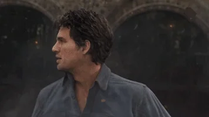

A brilliant scientist who, after an experiment with gamma radiation goes wrong, transforms into the Hulk—a giant, green, super-strong being—whenever he experiences intense anger. The Hulk's strength increases with his emotional intensity, making him nearly invulnerable in battle. Though Bruce struggles to control the Hulk’s rage, his dual identity is a central theme of his character. Banner’s intellect and scientific background complement Hulk’s raw power, and together they form an essential part of the Avengers team.
